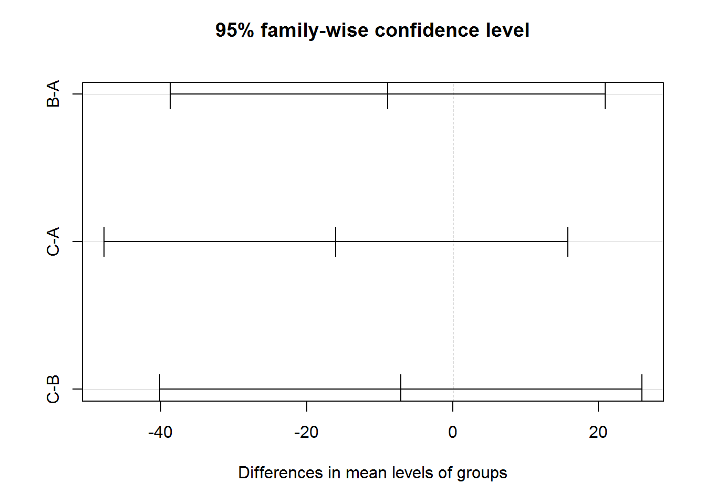
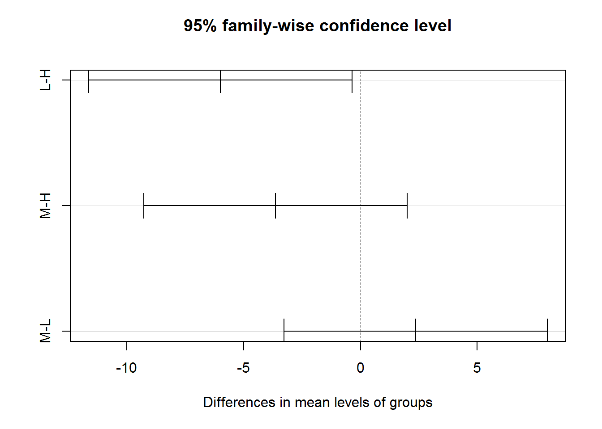
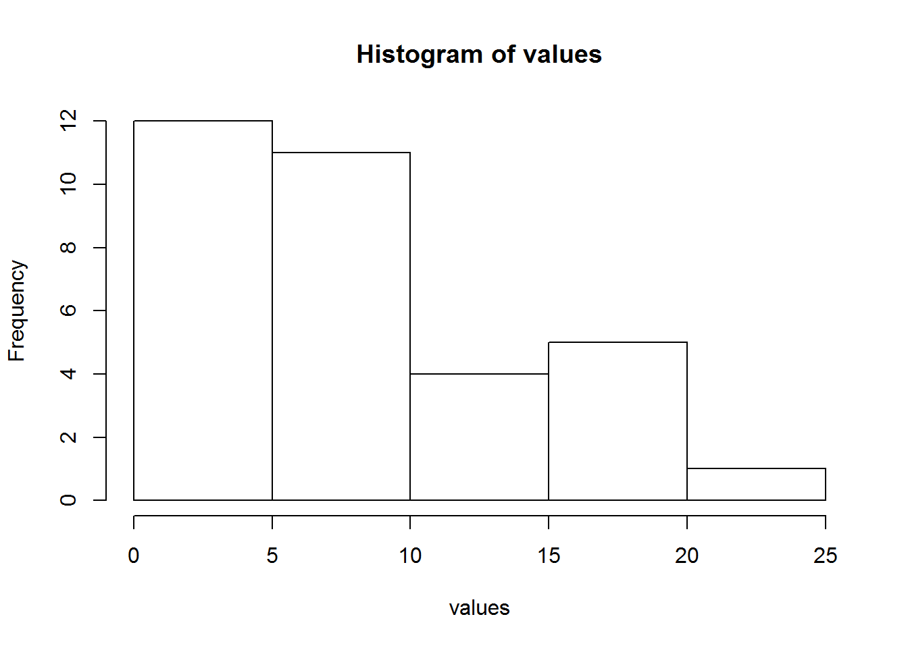
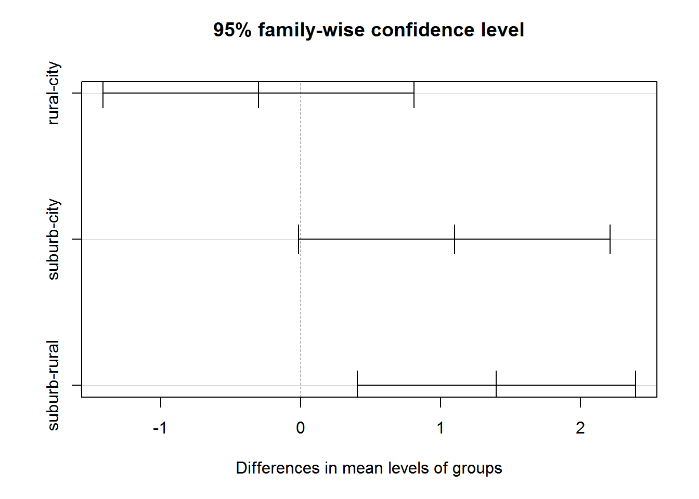

5 Lab - Analysis of Variance
Complete the following exercises in Chapter 6 (Analysis of Variance) of the textbook pages 199-203. For each question, you need to specify the null hypothesis and why you accept or reject the null hypothesis.
5.1 Question 1
This is Exercise 2 in Chapter 6 of the Textbook [R].
5.1.1 Problem
Assume that an analysis of variance is conducted for a study where there are \(N = 50\) observations and \(k = 5\) categories. Fill in the blanks in the following ANOVA table:
| Sum of squares | Degrees of freedom | Mean square | F | |
|---|---|---|---|---|
| Between | 116.3 | |||
| Within | 2000 | |||
| Total |
5.1.2 Solution
n <- 50
k <- 5
WSS <- 2000
m.sq1 <- 116.3
df1 <- k - 1
df2 <- n - k
BSS <- df1 * m.sq1
m.sq2 <- WSS/df2
TSS <- WSS + BSS
F.ratio <- m.sq1/m.sq2 ## 2.61675
F.critical <- qf(0.95,df1,df2) ## 2.5787
if(F.ratio > F.critical) {
print("We reject the null hypothesis")
} else {
print("we cannot reject the null hypothesis")
}## [1] "We reject the null hypothesis"| Sum of squares | Degrees of freedom | Mean square | F | |
|---|---|---|---|---|
| Between | 465.2 | 4 | 116.3 | 2.61675 |
| Within | 2000 | 45 | 44.4444444 | |
| Total | 2465.2 |
5.2 Question 2
This is Exercise 6 in Chapter 6 of the Textbook [R].
5.2.1 Problem
Is there a significant difference between the distances moved by low- and high-income individuals? Twelve respondents in each of the income categories are interviewed, with the following results for the distances associated with residential moves:
| Respondent | Low income | High income |
|---|---|---|
| 1 | 5 | 25 |
| 2 | 7 | 24 |
| 3 | 9 | 8 |
| 4 | 11 | 2 |
| 5 | 13 | 11 |
| 6 | 8 | 10 |
| 7 | 10 | 10 |
| 8 | 34 | 66 |
| 9 | 17 | 113 |
| 10 | 50 | 1 |
| 11 | 17 | 3 |
| 12 | 25 | 5 |
| Mean | 17.17 | 23.17 |
| Std. dev. | 13.25 | 33.45 |
Test the null hypothesis of homogeneity of variances by forming the ratio \(s_1^2 / s_2^2\) which has an F-ratio with \(n_1 – 1\) and \(n_2 – 1\) degrees of freedom. Then use ANOVA (with \(\alpha = 0.10\)) to test whether there are differences in the two population means. Set up the null and alternative hypotheses, choose a value of α and a test statistic, and test the null hypothesis. What assumption of the test is likely not satisfied?
5.2.2 Solution
L <- c(5,7,9,11,13,8,10,34,17,50,17,25)
H <- c(25,24,8,2,11,10,10,66,113,1,3,5)
m1 <- mean(L)
m2 <- mean(H)
s1 <- var(L)
s2 <- var(H)
income <- c(L,H)
group <- c(rep("L",12),rep("H",12))
df <- data.frame(income,group)
F <- s1/s2 #0.157
F.ratio <- df(0.9,df1 = 11,df2 = 11) #0.708
library(car)##
## Attaching package: 'car'## The following object is masked from 'package:dplyr':
##
## recodeleveneTest(income~group,data = df)## Levene's Test for Homogeneity of Variance (center = median)
## Df F value Pr(>F)
## group 1 1.0206 0.3234
## 22m <- aov(income~group, data = df)
summary(m)## Df Sum Sq Mean Sq F value Pr(>F)
## group 1 216 216.0 0.334 0.569
## Residuals 22 14241 647.3kruskal.test(L,H)##
## Kruskal-Wallis rank sum test
##
## data: L and H
## Kruskal-Wallis chi-squared = 10.846, df = 10, p-value = 0.3697shapiro.test(L)##
## Shapiro-Wilk normality test
##
## data: L
## W = 0.81099, p-value = 0.01253shapiro.test(H)##
## Shapiro-Wilk normality test
##
## data: H
## W = 0.67351, p-value = 0.00047385.3 Question 3
This is Exercise 9 in Chapter 6 of the Textbook [R].
5.3.1 Problem
A sample is taken of incomes in three neighborhoods, yielding the following data:
| A | B | C | Overall (Combined sample) | |
|---|---|---|---|---|
| N | 12 | 10 | 8 | 30 |
| Mean | 43.2 | 34.3 | 27.2 | 35.97 |
| Std. dev. | 36.2 | 20.3 | 21.4 | 29.2 |
Use analysis of variance (with α = 0.05) to test the null hypothesis that the means are equal.
5.3.2 Solution
library(MASS)
A <- mvrnorm(12,mu = 43.2,Sigma = 36.2^2,empirical = TRUE)
B <- mvrnorm(10,mu = 34.3,Sigma = 20.3^2,empirical = TRUE)
C <- mvrnorm(8,mu = 27.2,Sigma = 21.4^2,empirical = TRUE)
k <- 3
n <- 30
values <- c(A,B,C)
groups <- c(rep("A",12),rep("B",10),rep("C",8))
df <- data.frame(values,groups)
m <- aov(values~groups,data = df)
summary(m)## Df Sum Sq Mean Sq F value Pr(>F)
## groups 2 1270 635.2 0.804 0.458
## Residuals 27 21329 790.0p.value <- summary(m)[[1]][[1,"Pr(>F)"]]
if(p.value > 0.05) {
print("We cannot reject the null hypothesis")
} else {
print("We reject the null hypothesis")
}## [1] "We cannot reject the null hypothesis"TukeyHSD(m)## Tukey multiple comparisons of means
## 95% family-wise confidence level
##
## Fit: aov(formula = values ~ groups, data = df)
##
## $groups
## diff lwr upr p adj
## B-A -8.9 -38.73854 20.93854 0.7424056
## C-A -16.0 -47.80799 15.80799 0.4365612
## C-B -7.1 -40.15583 25.95583 0.8561024plot(TukeyHSD(m))
5.4 Question 4
This is Exercise 10 in Chapter 6 of the Textbook [R].
5.4.1 Problem
Use the Kruskal–Wallis test (with α = 0.05) to determine whether you should reject the null hypothesis that the means of the four columns of data are equal:
| Col 1 | Col 2 | Col 3 | Col 4 |
|---|---|---|---|
| 23.1 | 43.1 | 56.5 | 10002.3 |
| 13.3 | 10.2 | 32.1 | 54.4 |
| 15.6 | 16.2 | 43.3 | 8.7 |
| 1.2 | 0.2 | 24.4 | 54.4 |
5.4.2 Solution
c1 <- c(23.1,13.3,15.6,1.2)
c2 <- c(43.1,10.2,16.2,0.2)
c3 <- c(56.5,32.1,43.3,24.4)
c4 <- c(10002.3,54.4,8.7,54.4)
values <- c(c1,c2,c3,c4)
groups <- c(rep("c1",4),rep("c2",4),rep("c3",4),rep("c4",4))
df <- data.frame(values,groups)
result <- kruskal.test(values~groups,data = df)
if(result$p.value>0.05) {
print("We cannot reject the null hypothesis")
} else {
print("We reject the null hypothesis")
}## [1] "We cannot reject the null hypothesis"5.5 Question 5
This is Exercise 12 in Chapter 6 of the Textbook [R].
5.5.1 Problem
A researcher wishes to know whether distance traveled to work varies by income. Eleven individuals in each of three income groups are surveyed. The resulting data are as follows (in commuting miles, one-way):
## This is the script to generate the table. Do not write your answer inside in this block.
Observations <- seq(1:11)
Low <- c(5,4,1,2,3,10,6,6,4,12,11)
Medium <- c(10,10,8,6,5,3,16,20,7,3,2)
High <- c(8,11,15,19,21,7,7,4,3,17,18)
df <- data.frame(Observations,Low,Medium,High)
library(knitr)
kable(df)| Observations | Low | Medium | High |
|---|---|---|---|
| 1 | 5 | 10 | 8 |
| 2 | 4 | 10 | 11 |
| 3 | 1 | 8 | 15 |
| 4 | 2 | 6 | 19 |
| 5 | 3 | 5 | 21 |
| 6 | 10 | 3 | 7 |
| 7 | 6 | 16 | 7 |
| 8 | 6 | 20 | 4 |
| 9 | 4 | 7 | 3 |
| 10 | 12 | 3 | 17 |
| 11 | 11 | 2 | 18 |
Use analysis of variance (with α = 0.05) to test the hypothesis that commuting distances do not vary by income. Also evaluate (using R and the Levene test) the assumption of homoscedasticity. Finally, lump all of the data together and produce a histogram, and comment on whether the assumption of normality appears to be satisfied.
5.5.2 Solution
L <- c(5,4,1,2,3,10,6,6,4,12,11)
M <- c(10,10,8,6,5,3,16,20,7,3,2)
H <- c(8,11,15,19,21,7,7,4,3,17,18)
values <- c(L,M,H)
groups <- c(rep("L",11),rep("M",11),rep("H",11))
df <- data.frame(values,groups)
m <- aov(values~groups,data = df)
summary(m)## Df Sum Sq Mean Sq F value Pr(>F)
## groups 2 201.0 100.48 3.493 0.0433 *
## Residuals 30 862.9 28.76
## ---
## Signif. codes: 0 '***' 0.001 '**' 0.01 '*' 0.05 '.' 0.1 ' ' 1TukeyHSD(m)## Tukey multiple comparisons of means
## 95% family-wise confidence level
##
## Fit: aov(formula = values ~ groups, data = df)
##
## $groups
## diff lwr upr p adj
## L-H -6.000000 -11.637743 -0.3622571 0.0351337
## M-H -3.636364 -9.274107 2.0013792 0.2653924
## M-L 2.363636 -3.274107 8.0013792 0.5619154plot(TukeyHSD(m))
p.value <- summary(m)[[1]][[1,"Pr(>F)"]]
if(p.value > 0.05) {
print("We cannot reject the null hypothesis")
} else {
print("We reject the null hypothesis")
}## [1] "We reject the null hypothesis"library(car)
leveneTest(values~groups,data = df)## Levene's Test for Homogeneity of Variance (center = median)
## Df F value Pr(>F)
## group 2 2.1694 0.1318
## 30## p-value = 0.131
## the assumption of homoscedasticity is satisfied.
hist(values)
shapiro.test(values)##
## Shapiro-Wilk normality test
##
## data: values
## W = 0.90693, p-value = 0.008099## p-value = 0.008 < 0.05
## the assumption of normality not satisfied5.6 Question 6
This is Exercise 13 in Chapter 6 of the Textbook [R].
5.6.1 Problem
Data are collected on automobile ownership by surveying residents in central cities, suburbs and rural areas. The results are:
| Central cities | Suburbs | Rural areas | |
|---|---|---|---|
| Number of observations | 10 | 15 | 15 |
| mean | 1.5 | 2.6 | 1.2 |
| Std. dev | 1.0 | 1.1 | 1.2 |
| Overall mean: 1.725 | |||
| Overall std.dev: 1.2 |
Test the null hypothesis that the means are equal in all three areas.
5.6.2 Solution
city <- mvrnorm(10,mu = 1.5,Sigma = 1,empirical = TRUE)
suburb <- mvrnorm(15,mu = 2.6,Sigma = 1.1^2,empirical = TRUE)
rural <- mvrnorm(15,mu = 1.2,Sigma = 1.2^2,empirical = TRUE)
values <- c(city,suburb,rural)
groups <- c(rep("city",10),rep("suburb",15),rep("rural",15))
df <- data.frame(values,groups)
m <- aov(values~groups,data = df)
summary(m)## Df Sum Sq Mean Sq F value Pr(>F)
## groups 2 15.9 7.950 6.381 0.00416 **
## Residuals 37 46.1 1.246
## ---
## Signif. codes: 0 '***' 0.001 '**' 0.01 '*' 0.05 '.' 0.1 ' ' 1TukeyHSD(m)## Tukey multiple comparisons of means
## 95% family-wise confidence level
##
## Fit: aov(formula = values ~ groups, data = df)
##
## $groups
## diff lwr upr p adj
## rural-city -0.3 -1.41257183 0.8125718 0.7888370
## suburb-city 1.1 -0.01257183 2.2125718 0.0531846
## suburb-rural 1.4 0.40488550 2.3951145 0.0041221plot(TukeyHSD(m))
p.value <- summary(m)[[1]][[1,"Pr(>F)"]]
if(p.value > 0.05) {
print("We cannot reject the null hypothesis")
} else {
print("We reject the null hypothesis")
}## [1] "We reject the null hypothesis"### p-value = 0.004 < 0.05
### conclusion: reject the null hypothesis
## the suburbs-rural group are significantly different